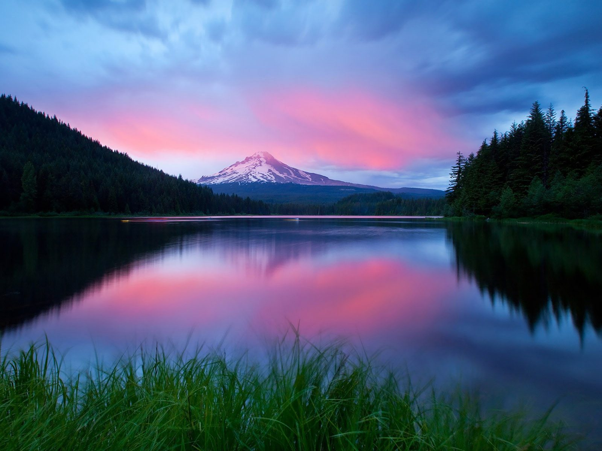

Lab 15 - Fancy CSS 1

Challenges
The subject of this lab is to experiment with the fancy CSS we learned in the lecture.
Problems
I didn't really have any problems this lab. This lab was pretty straight forward and fun to do.
Results
The page you are viewing shows that I was able to complete this lab.
Callout
Text-Shadow- I used text shadows for all headings.
Box-Shadow- I used box shadow around the content boarder and around the image boarder.
Gradient- I used a pink, purple and blue linear gradient as the background of the content.
Filters- I used a greyscale filter for the image.
Rounded Corners- I rounded the corners of the content boarder and image boarder.
Object-Fit- I used object-fit "contain" on the image.
Transform- I transformed the image 20 degrees.